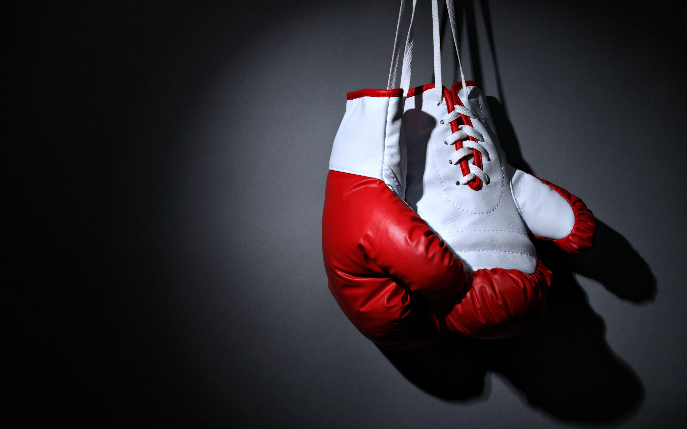

Présentation
La boxe est devenue une vraie passion pour moi. J’ai commencé il y a deux ans, avant ça, j’avais essayé de nombreux sports. J’ai fait du vélo, de la couture ,du basket…Mais aucune de ces activités ne m’a vraiment plu. Un jour, j’ai accompagné une amie de ma mère qui voulait tester une séance d’initiation pour son enfant. J’ai décidé d’essayer moi aussi, ce n’était pas du tout prévu que je m’inscrive. Mais dès la première séance, j’ai bien aimé . J’ai tout de suite accroché avec les sensations que ce sport, me procure, j’ai pu me dépasser . Du coup, je me suis inscrite. Je fait la boxe française à la Cité des Sports de Wattrelos. La boxe française est une boxe qui utilise toutes les parties de notre corps , ce qui demande ducoup beaucoup de coordination et de technique.C’est ce que nous travaillons à chaque séance. On travaille l’endurance grave au cardio ainsi que la rapidité, on travaille aussi la précision lors des techniques et la concentration à l’aide des étirements. Ce sport peut aussi me permettre de me défendre si besoin ce qui est plutôt utile dans la rue . Petit à petit, j’ai pris confiance en moi. Je m’entraîne le mardi de 19h à 21h et le jeudi.
La boxe me permet de de faire une pause lors des cours de me défouler et de me sentir bien après l’entraînement. Grâce à ce sport, je me suis aussi fait de nombreuses copines comme Noémie, Maïssane et Zélie . Ce sport nous a permis de nous rencontrer . J’aime aussi regarder des combats de boxe,où l’on suit leur entraînement et leur régime . Aujourd’hui, la boxe est pour moi une activité physique très importante.
